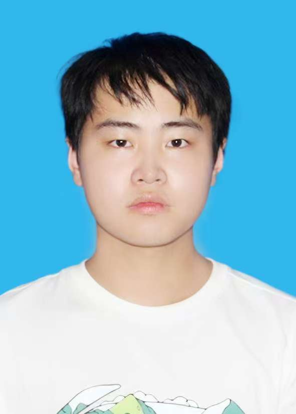

| 姓名 | 孙国韩 | 性别 | 男 | 年龄 | 18 |  | |
| 籍贯 | 山东德州 | 联系电话 | 15522965165 | 电子邮箱 | 2685281056@qq.com | ||
| 学历 | 本科 | 健康状况 | 良好 | 婚姻状况 | 未婚 | ||
| 求职意向 | 前端开发 | 专业 | 计算机科学与技术（智能机器人方向） | 毕业院校 | 鲁东大学 | ||
| 技能证书 |
|
||||||
| 个人特长与爱好 |
|
||||||
| 项目经历 | 软件杯：Web应用开发项目 | ||||||
| 自我评价 |
进入大学以来，我再一次对学习产生了兴趣，无论是高数，英语，还是计算机的专业课程，都很吸引我。
我知道项目的完成不能只靠一个人，成果的取得需要团队的努力，我愿与大家友好相处，团结协作，共同解决遇到的问题。 |
||||||